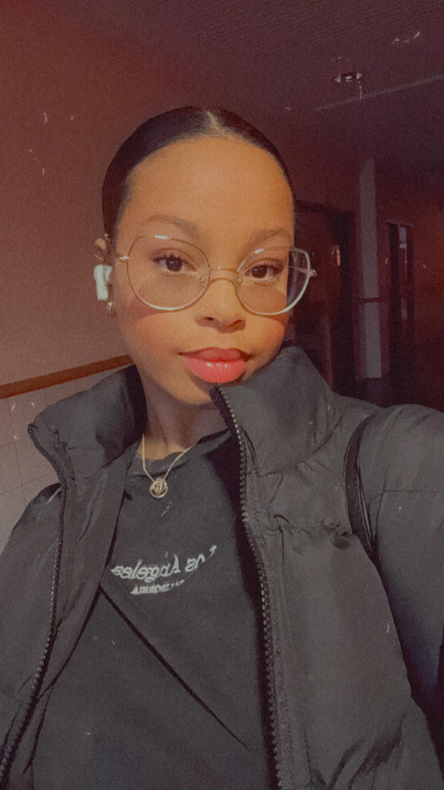

Bienvenue sur mon portfolio
Étudiante en BTS SIO option SISR, passionnée par l'administration des systèmes et des réseaux.
À propos
Je suis COËZY-MERRIFIELD Shaina, étudiante en deuxième année de BTS SIO option SISR. Mon objectif est de maîtriser les outils et technologies liés à l'administration des réseaux et des systèmes, tout en développant des solutions sécurisées et performantes.

COËZY-MERRIFIELD Shaina
2+
Certifications obtenues
Projets

Configuration d'un serveur DHCP
Installation et configuration d'un serveur DHCP sous Windows Server pour un réseau local d'entreprise.
Déploiement d'une solution de virtualisation
Mise en place d'une infrastructure virtualisée avec VMware et création de machines virtuelles.
Compétences
- Administration systèmes : Windows Server, Linux
- Réseaux : Configuration routeurs et switches (Cisco)
- Virtualisation : VMware, Hyper-V
- Sécurité : Mise en place de politiques de sécurité
- Langages : Python, Bash
SEMPER CONNECT
SEMPER CONNECT est une entreprise spécialisée dans les solutions de connectivité avancées. Fondée avec l'objectif de transformer la façon dont les entreprises se connectent au monde numérique, SEMPER CONNECT fournit des solutions innovantes et personnalisées pour répondre aux besoins uniques de chaque client.
Pour plus d'informations, visitez leur site officiel : SEMPER CONNECT